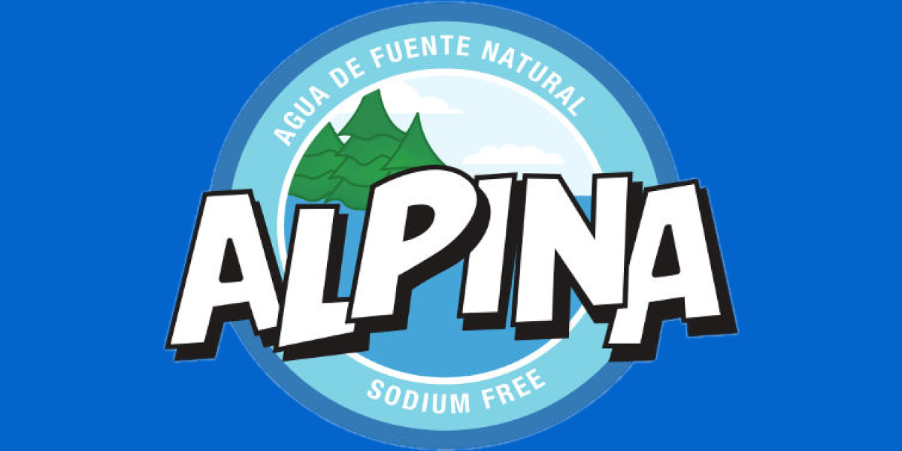

alpina
Agua Alpina es una marca de agua embotellada que se produce y distribuye en El Salvador. Es la única agua embotellada libre de sodio y metales pesados.
Agua Alpina es una marca de agua embotellada que se produce y distribuye en El Salvador. Es la única agua embotellada libre de sodio y metales pesados.
Marca de agua de Danone que proviene de una capa profunda del suelo, protegida por una capa impermeable.
Agua Cristal es una marca de agua embotellada que se vende en El Salvador, Colombia y República Dominicana.

Embotelladora Electropura es una empresa Migueleña fundada hace más 60 años, bajo la visión del Dr. Miguel Félix Charlaix, inicialmente como un servicio de agua filtrada para amigos a quienes se les llenaban los garrafones que luego eran transportados a través de carretas en el departamento de San Miguel.